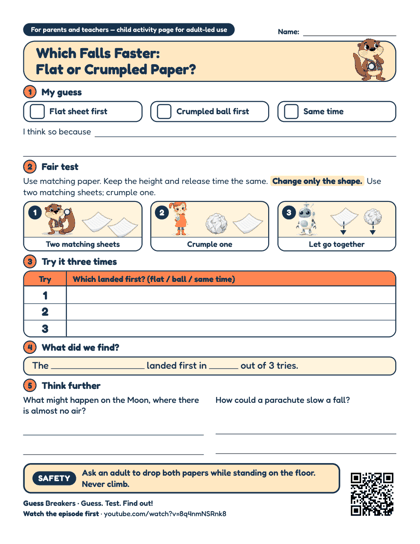

Which Falls Faster: Flat or Crumpled Paper?
A one-page student worksheet with a guess, a fair test and a results table, plus a second page of notes for the adult.
These materials are written for adults. Print them freely for your class or your home, and do the activity together with your children.

A one-page student worksheet with a guess, a fair test and a results table, plus a second page of notes for the adult.